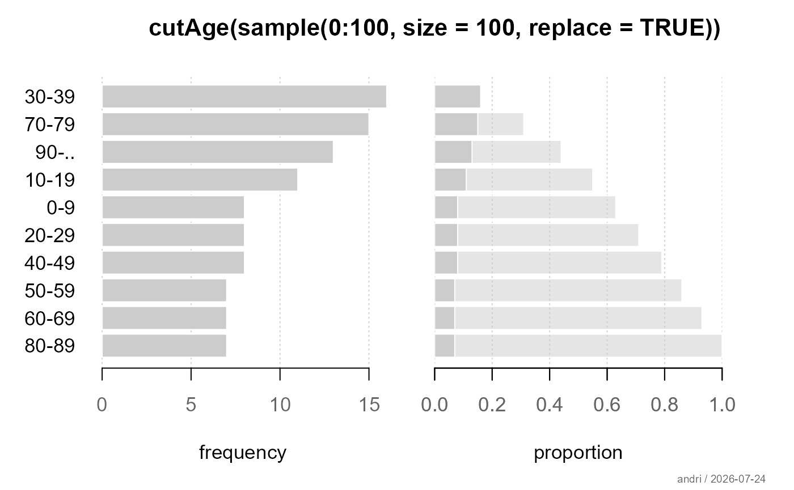

Dividing the range of an age variable x into intervals is a frequent
task in data analysis. The commonly used function cut has
unfavourable default values for this. cutAge() is a convenient
wrapper for cutting age variables in groups of e.g. 10 years with more
suitable defaults.
continuous variable
either a numeric vector of two or more unique cut points or a single number (greater than or equal to 2) giving the number of intervals into which x is to be cut. Default is 10-year intervals from 0 to 90.
logical, indicating if the intervals should be closed on the
right (and open on the left) or vice versa. Default is FALSE -
unlike in cut!
logical: should the result be an ordered factor?
Default is TRUE - unlike in cut!
logical; whether to retain empty levels at the edges of the distribution
labels for the levels. When set to TRUE the age ranges
will be 00-09, 10-19, 20-29, etc.
further arguments passed to cut(), for example
to change the labels
a factor, or an integer vector of level codes when
labels = FALSE
Values which fall outside the range of breaks are coded as NA, as are
NaN and NA values.
desc(cutAge(sample(0:100, size=100, replace=TRUE)))
#> ──────────────────────────────────────────────────────────────────────────────
#> cutAge(sample(0:100, size = 100, replace = TRUE)) (ordered, factor)
#>
#> length n NAs unique levels dupes
#> 100 100 0 10 10 y
#> 100.0% 0.0%
#>
#> level freq perc cumfreq cumperc
#> 1 0-9 8 8.0% 8 8.0%
#> 2 10-19 11 11.0% 19 19.0%
#> 3 20-29 8 8.0% 27 27.0%
#> 4 30-39 16 16.0% 43 43.0%
#> 5 40-49 8 8.0% 51 51.0%
#> 6 50-59 7 7.0% 58 58.0%
#> 7 60-69 7 7.0% 65 65.0%
#> 8 70-79 15 15.0% 80 80.0%
#> 9 80-89 7 7.0% 87 87.0%
#> 10 90-.. 13 13.0% 100 100.0%
#>
